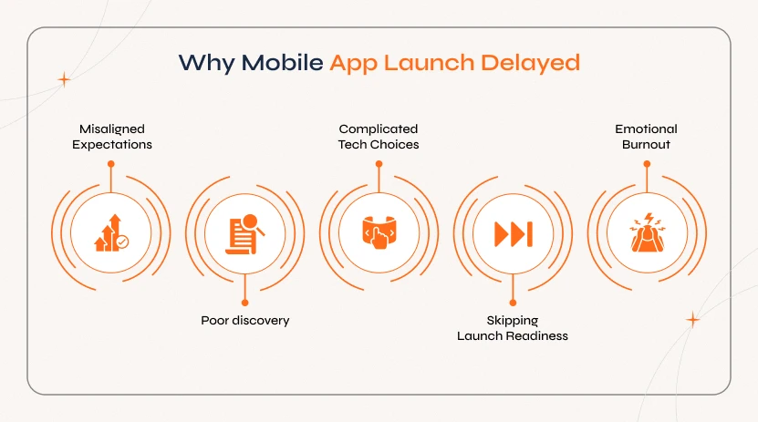
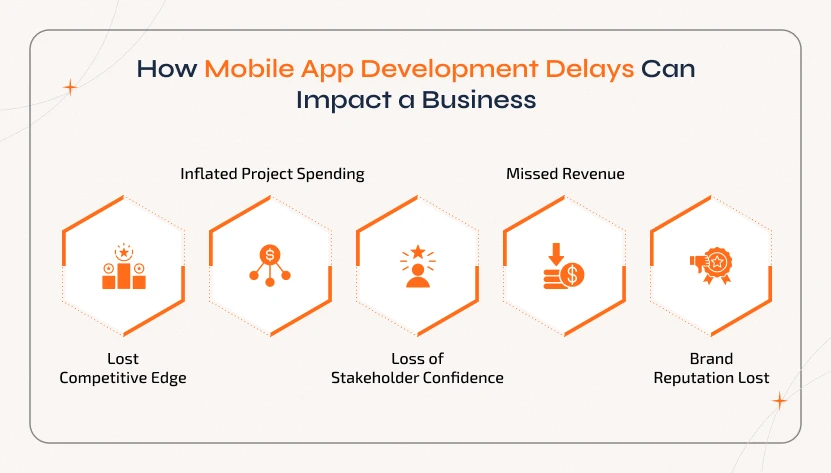
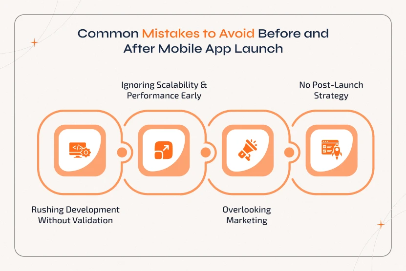

If you’re hearing, the mobile app project has been ‘almost ready’ for months, then you’re in jeopardy. Similar to that, a vast number of business owners, project managers, CTOs, and operations heads find themselves get caught in the same frustrating loop. Aspects that include missed app launch deadline, shifting priorities, and unceasing tweaks will always lead to mobile app development delays.
In the meantime, you’re only ‘partially doomed’, meaning you still have time to fix things up and get the project back on track. Usually, delays will expose a few predictable patterns that can be identified a bit earlier. With proper strategies, you can prevent potential delays or can take necessary steps for recovering delayed projects.
In this blog, we’ll unpack why app development delays occur, what precautions need to be taken, and remedies to follow that turn delays into strategic wins.
Why Mobile App Launch Delayed?
When you notice closely, there’s rarely one big mistake behind every delayed app development project. It can be a code error, miscommunication, or other related issues. These unaddressed issues will pile up behind the back and be the main reason for project collapses. Here are some of the major causes for the app development failure.

- Misaligned Expectations: The disconnection between business goals and technical execution will always lead to delayed work.
- Poor discovery: Teams often rush things even before deeply understanding the user’s pain points. As a result, poor discovery leads to solving the wrong problem.
- Complicated Tech Choices: Chasing the latest firmware, microservices, and architectures from day one might slow down the development cycle. It’s better to act smartly than act quickly without a proper solution.
- Skipping Launch Readiness: After the launch, teams fail to plan what’s next. Ignoring store submission prep and support workflows will lead to chaos.
- Emotional Burnout: Aspects like endless revisions, unclear direction, and constant scope changes will frustrate employees and lead to unpredictable outcomes.
How Mobile App Development Delays Can Impact a Business
When the mobile app launch gets pushed back, the efforts drop by your internal team feel futile. Delays will quietly slow down growth and affect how your target customers view your brand.

Lost Competitive Edge
In the tech industries, timing is
everything. Even a few months or even a weekly delay can turn the tables around. Due
to this, you might lose the Initial advantage and give your competitor a chance to
grasp your target audience. Innovations, which were previously praised, will now
turn into struggles.
Inflated Project Spending
Increased timelines will always
lead to draining more money. The possible reasons for the delays are more billable
hours, extra coordination between teams, and continuous testing. What actually
begins as a well-budgeted plan will quickly turn into a costly nightmare.
Loss of Stakeholder Confidence
When the mobile app launch
keeps on pushed back, it’s not just the schedule that suffers, but the trust. Over
time, the investors start questioning your reliability, team morale begins to drop,
and the stakeholders will lose confidence in the plan.
Missed Revenue
The clock doesn’t stop if the launch got
delayed, it runs along the way. Each and every extra week pushes back use sign-ups,
in-app purchases, and partnership deals that generates income. The longer the wait
the harder the revenue becomes to catch up.
Brand Reputation Lost
In the
fast-moving market, reliability is the one what actually shapes how people witness
your brand. If the releases keep on getting delayed, it shows a lack of coordination
among teams. As time passes away, it drains the customer confidence and places a red
mark on your brand.
8 Practical Tips to Speed Up App Launch Time on iOS & Android
For startups and even for some mid-sized businesses, an extra week before launch costs momentum. Here are some of the proven tips you can follow to speed up your iOS and Android app releases without losing quality.

1. Set MVP Boundaries
If you’re facing constant app
delays, the first thing that you need to carry out is setting boundaries. Decide
early on how to launch the app flawlessly and what makes the teams aligned to avoid
endless additions. By defining MVP (Minimal Viable Product) and wrapping things up,
you can minimize shifting requirements. Bypassing these frequent scope changes will
reduce delays and keep momentum.
2. Modular Rollout Strategy
Following the modular
architecture strategy, you can build, test, and release parts of the application
separately. This neglects the all-in-one delivery wait. Shipping smaller modules
will reduce risk and pinpoints the bugs quicker than before. By following this
approach, you can test features in real-time and make quick changes if needed.
3. Automate Builds & Tests
Usually, manual builds and
irregular deployments will slow down the app development. On the contrary, do set up
CI/CD pipelines tailored for iOS and Android platforms that automate
builds, testing, and distribution. Using the repeated pipelines helps you to cut off
potential errors, speeds up delivery, and encourages frequent releases.
4. Dark Launch Approach
Instead of waiting for a full
launch, do use feature flags to launch codes that are actually ready but keep hidden
from most users. In this way, you can do “Dark Launches”, meaning you can turn on
new features just for a small group for testing. Following this will lower the risk
and help you stay on schedule.
5. Optimize Builds & Reuse
If the build takes more time
than usual, or the devs wait for full rebuilds, the iteration will slow down. So,
your primary focus should be on build speed. For this, proceed with caching,
parallel compilation, reuse of artifacts, and mimimize dependency churn.
6. App Store Readiness
Submitting the full-scale application to Google Play Console and App Store Connect usually takes more time than usual. This happens if the metadata, privacy info, and screenshots are lagging behind. By preparing everything ahead, you can reduce the chance of rejection or skip additional review rounds.
7. Early Crash Insights
Waiting to fix the potential bugs by setting up analytics or crash tracking after the launch can leave you in the dark. Instead of waiting, you can add the well-suited tools in early development stages, so you can start gathering real-time user data from beta testers or early users.
8. Set Clear SLAs
Delays will often occur if the team waits too long for decisions, reviews or shifting priorities. To avoid these ones, set transparent SLAs (Service Level Agreements) for aspects like code reviews and bug fixes. This approach will keep the communication flow alive and help in quick decision-making.
Challenges that Mobile App Startups Face After Launch
For startups, the real frustration begins after the app launch. Keeping the application alive, loved, and scaling smoothly is where the real grid starts. If something went off board, here are the real struggles that a startup's heads face.
Keeping Users to Stick Around
When it comes to startups, they spend more time than the enterprise does in building and launching an app. But after the release, the users gather all at once and at a certain point, they’ll vanish like nothing happened.
For instance, take “Clubhouse”. It gained intense popularity during the pandemic, and suddenly, the hype faded away. Similarly, without engagement strategies, early adopters stopped after a few updates.
Finding the Right Way to Make Money
For new faces, monetization looks easy, like on ads, in-app purchases, and subscriptions. However, it’s actually hard to pick what actually fits the audience. Like they don’t want to annoy users, but still need to generate revenue.
Speaking of which, “BeReal” got super popular for its “one photo a day” idea, but couldn’t figure out how to make money without losing its realness.
Handling Bugs & Rapid Feedback
It doesn’t matter how intense the testing goes, real users will easily find occurring bugs. The flood of negative reviews, feature requests, and feedback can be overwhelming, and they don’t even have enough people to fix things in time.
“Bluesky”, started as an independent alternative to Twitter, gained massive signups in its early days. But quickly face many issues like performance drop, security glitches, and occurring bugs.
Managing Limited Budget & Team
In the post-launch phase, money drains up faster than the company even expected. Startups can’t hire everyone that they need. To fill the development, designing, marketing and QA roles, most of them wear multiple hats.
In the early days, due to some reasons, “Notion” nearly ran out of money and had just a few people to rebuild the entire product after users dropped off. The founder was forced to redesign the entire thing from scratch.
Staying Visible Among Competitors
As you know, the app stores are crowded with multiple apps. Every day, a new application will pop up with the same specifications and design. Without a strong pre-launch marketing for delayed apps, sustaining remains unanswered.
“Meerkat”, an initial live-streaming service, gained popularity due to its live video streaming. However, Twitter’s Periscope crushed its visibility quite later.
Common Mistakes to Avoid Before and After Mobile App Launch
Sometimes, even the best ideology can flop if teams don’t overlook the minute details before and after the mobile app goes live. Here are some common mistakes that a team should avoid at any cost during mobile app development and beyond.

Rushing Development Without Validation
Many firms, especially startups, skip user validation or market testing. They assume that the idea will bring success without taking any precautions. As a result, even if the app is developed good, it lacks what users actually want. So, before building test assumptions with real-time feedback.
Ignoring Scalability & Performance Early
During pre-launch, the excitement usually makes teams focus on implementing more features, unaware that the app can’t handle much load. On the other hand, after the post-launch, the app lags, crashes, resulting in creating frustration among users. Always plan smart or implement MVP development to avoid these issues.
Overlooking Marketing
Custom app development is good for nothing if no one knows what the app is about. After the launch, the users didn’t even check because they didn’t get the app’s purpose. Marketing and promoting the app before and after the launch creates awareness among people and gives a purpose to download and use the app.
No Post-Launch Strategy
A successful launch isn’t the end of the Software development. It’s more like the beginning of the product’s actual test. Many apps will slow down the performance after two or more updates. Keeping a transparent and straightforward roadmap will build trust and keep the app alive.
How Sparkout Helps Clients to Overcome Mobile App Launch Delayed
Being one of the leading mobile app consultant solutions, our main motto at Sparkout is to bridge the gap between strategy and execution. With agile development and performance-first architecture, we help your internal team stop app development delays. At Sparkout, our in-house capability covers every nook and cranny, from automated testing to real-time app setup.
We have partnered with early-stage startups across domains like fintech, mobility, and lifestyle that actually faced repeated launchback problems. To be precise, a social networking client cut their time-to-market by 40% after our Sparkout team streamlined their QA and release workflow.
Our pitch is simple and yet transparent. We don’t just boost the app, instead, we ensure the software reaches users on time and performs without flaws from day one.
Why Choose Sparkout to Boost Your Mobile App Launch
When timelines stretch and excitement fails, Sparkout steps in to help brands accelerate app development. Here are some of the key reasons why you should consider partnering up with Sparkout to quicken the app launch.
Proven Launch Acceleration
Once partnered, we will build a structured launch playbook that pinpoints the roadblocks much earlier. After this, we implement app launch strategy to eliminate them before they cause delays.
Tech Excellence Across Platforms
Businesses can hire our app developers who specialize in Flutter, Swift, Kotlin, React Native, and other modern tools and frameworks to ensure optimal performance.
Launch Readiness Support
Beyond just generating code, we help in reshaping your launch strategy. We stay with you from beta testing to app store optimization, ensuring maximum visibility from the start.
Continuous Support
Clients who partnered with Sparkout experience faster release cycles, improved stability, and strong post-launch support. We stay with the project, monitor post-deployment, monitor, and optimize the performance with every update.
Wrapping Things Up
Every delayed app launch has its own story. It can be missed signals, shifting priorities, or the tech that couldn’t keep up with the current trends. But none of that has to do with your product’s future if you partner up with Sparkout.
Our approach it’s about rushing things. It's about delivering an app with maximum precision and clarity that scales. We assist with you in filling the empty gaps and make each and every sprint count. Because when the right strategy meets the right execution, your apps scales fast and stay remembered forever.